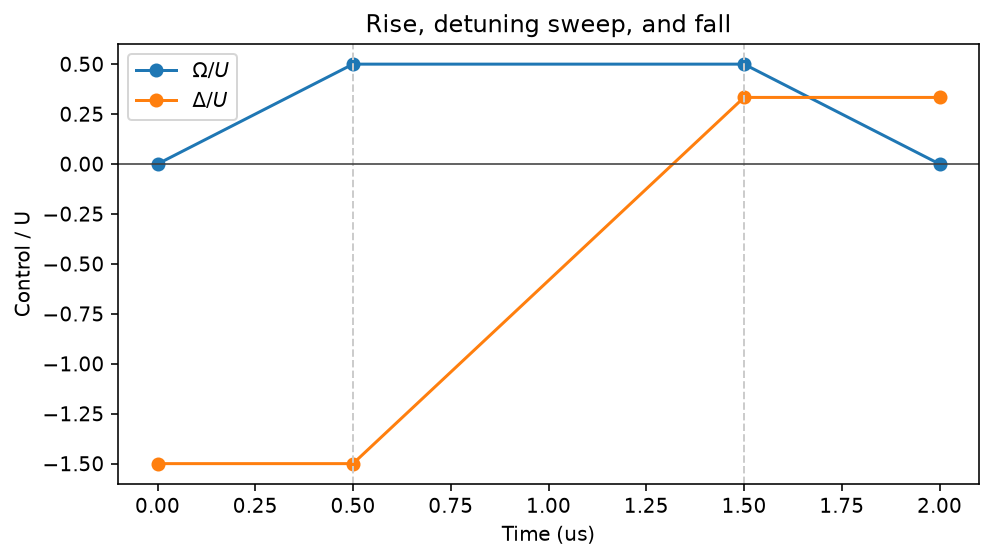
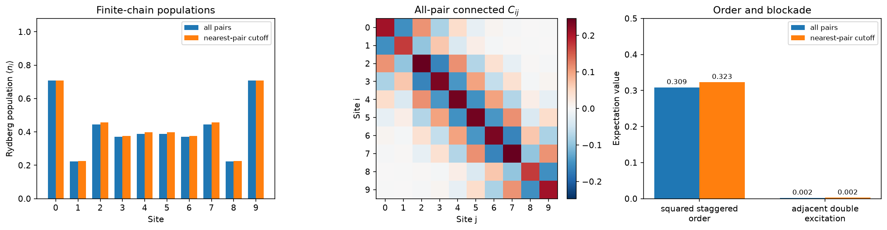

Build antiferromagnetic correlations in a Rydberg chain¶
-
Track
Neutral-atom physics
-
Downloads
A single atom performs Rabi oscillations. Put several atoms close together and the same laser drive becomes a many-body experiment: two nearby Rydberg excitations cost interaction energy, so neighbouring atoms prefer opposite states. In this tutorial we use that competition to build correlations between nearby sites in a ten-site chain.
The pulse follows the three-stage protocol used in Rydberg-array experiments: turn on the drive at negative detuning, sweep the detuning into the ordered region, then turn the drive off. See Bernien et al., Nature 551, 579 (2017) and Lienhard et al., Physical Review X 8, 021070 (2018).
This is a small, ideal simulation inspired by those experiments, not a numerical reproduction. The packaged reference supplies the atomic states and \(C_6\), so we will derive the distance and frequency scales explicitly from the selected model.
1. Load the physical model¶
Model selection is explicit. The document tells us which atomic states and
units its interaction coefficient describes; from_document validates it
before the emulator sees it.
import matplotlib.pyplot as plt
import numpy as np
import fatqat as fq
import fatqat.operations as ops
model_document = fq.emulator.load_model_document("atom2level.reference")
model = fq.emulator.Atom2LevelModel.from_document(model_document)
print("Model:", model_document["model"]["id"])
print("Basis:", model_document["system"]["basis"])
print("C6 unit:", model_document["units"]["c6"])
Runtime result
Model: rb87-53s-two-level-reference
Basis: {'g': '5S1/2,F=2,mF=0', 'r': '53S1/2,mJ=+1/2'}
C6 unit: rad/us*um^6
2. Choose the distance from the desired ZZ strength¶
In angular-frequency units, the native Rydberg Hamiltonian is
where \(n_i=|r\rangle\langle r|_i\). There is no missing factor of
\(2\pi\): C6, \(\Omega\), \(\Delta\), and \(U\) all use
rad/us in this model.
To see the Pauli coupling, substitute \(n=(I-Z)/2\):
The coefficient multiplying \(Z_iZ_j\) is therefore \(J_{ZZ}=U_{ij}/4\), not \(U_{ij}\). We choose a round peak drive \(\Omega_{max}=2\pi\) rad/us. Its transverse-field coefficient is \(h_x=\Omega_{max}/2\). Matching \(J_{ZZ}=h_x\) requires \(U=2\Omega_{max}\). The corresponding spacing follows from the model rather than being a magic number.
NUM_SITES = 10
OMEGA_MAX = 2 * np.pi # rad/us
U = 2 * OMEGA_MAX # nearest-pair Rydberg interaction, rad/us
J_ZZ = U / 4
C6 = model_document["parameters"]["c6"]
SPACING = (C6 / U) ** (1 / 6)
arrangement = fq.emulator.AtomArrangement.chain(
num_sites=NUM_SITES,
spacing=SPACING,
)
print(f"Nearest-pair U / 2pi = {U / (2 * np.pi):.3f} MHz")
print(f"Transverse h_x / 2pi = {OMEGA_MAX / (4 * np.pi):.3f} MHz")
print(f"Pauli J_ZZ / 2pi = {J_ZZ / (2 * np.pi):.3f} MHz")
print(f"Derived spacing = {SPACING:.3f} um")
Runtime result
Nearest-pair U / 2pi = 2.000 MHz
Transverse h_x / 2pi = 0.500 MHz
Pauli J_ZZ / 2pi = 0.500 MHz
Derived spacing = 4.932 um
Why ten sites? It is already a 1024-dimensional many-body state, but it remains quick enough for a local tutorial run. An even chain also keeps us honest: its open boundaries admit several low-energy patterns, and global controls do not have to select one perfect alternating bit string. We will therefore measure both site populations and a squared order parameter that recognizes staggered correlations without assuming a unique final pattern.
3. Account for the induced longitudinal field¶
Collecting all Pauli-Z terms gives
For the nearest-neighbour approximation, an interior chain site has two neighbours. Choosing \(\Delta=U\) cancels its induced longitudinal field. Our chosen peak drive makes the transverse and ZZ coefficients equal:
This cancellation is exact for the bulk of a periodic nearest-neighbour chain, but not for our finite open chain. An edge has only one neighbour and retains a \(+U Z/4\) field. The full \(1/R^6\) model adds smaller, position-dependent shifts as well. A single global detuning cannot cancel every site, and the tutorial will not hide that boundary effect.
More importantly, bulk cancellation is not the best final point for this preparation. At zero drive, adding one excitation while creating one adjacent pair changes the energy by \(-\Delta+U\); it costs nothing at \(\Delta=U\). We instead finish at \(\Delta=U/3\): positive detuning rewards Rydberg occupation, while one nearest-neighbour pair still costs more than the extra excitation gains. This suppresses adjacent excitations, but it does not leave only the two perfect Néel strings: a finite open chain also admits maximum-occupation patterns containing a domain wall. Nearest-pair interactions leave those patterns degenerate, while the full \(1/R^6\) tails weakly split them. The goal is therefore short-range antiferromagnetic correlation, not perfect Néel-state preparation. The cancellation formula remains useful for interpreting the Hamiltonian even though we do not end at its bulk value.
DELTA_INITIAL = -1.5 * U
DELTA_FINAL = U / 3
4. Build the three-stage pulse¶
At the start, \(\Omega=0\) and the negative detuning makes \(|gg\ldots g\rangle\) the ground state. We then:
- raise \(\Omega\) while holding \(\Delta\) negative;
- sweep \(\Delta\) into the ordered region;
- lower \(\Omega\) at fixed positive detuning.
Each two-point SampledWaveform is linear. Splitting the schedule into
three operations makes the constant and ramped parts explicit.
T_RISE = 0.5
T_SWEEP = 1.0
T_FALL = 0.5
def pulse_stage(
duration: float,
omega: tuple[float, float],
detuning: tuple[float, float],
) -> ops.PulseOperation:
"""Create one linear drive-and-detuning stage in model time units."""
times = (0.0, duration)
controls = (
fq.emulator.PulseControl(
model.control.drive(),
fq.emulator.SampledWaveform(times, omega),
),
fq.emulator.PulseControl(
model.control.detuning(),
fq.emulator.SampledWaveform(times, detuning),
),
)
return ops.PulseOperation(duration, controls)
program = fq.Program(arrangement.num_sites)
program.add(
pulse_stage(
T_RISE,
omega=(0.0, OMEGA_MAX),
detuning=(DELTA_INITIAL, DELTA_INITIAL),
)
)
program.add(
pulse_stage(
T_SWEEP,
omega=(OMEGA_MAX, OMEGA_MAX),
detuning=(DELTA_INITIAL, DELTA_FINAL),
)
)
program.add(
pulse_stage(
T_FALL,
omega=(OMEGA_MAX, 0.0),
detuning=(DELTA_FINAL, DELTA_FINAL),
)
)
Plotting the controls before running is a useful sanity check. Normalizing by \(U\) makes the physically important ratios visible.
stage_boundaries = np.cumsum((0.0, T_RISE, T_SWEEP, T_FALL))
omega_nodes = np.array((0.0, OMEGA_MAX, OMEGA_MAX, 0.0))
detuning_nodes = np.array((DELTA_INITIAL, DELTA_INITIAL, DELTA_FINAL, DELTA_FINAL))
figure, axis = plt.subplots(figsize=(7, 4))
axis.plot(stage_boundaries, omega_nodes / U, marker="o", label=r"$\Omega/U$")
axis.plot(stage_boundaries, detuning_nodes / U, marker="o", label=r"$\Delta/U$")
for boundary in stage_boundaries[1:-1]:
axis.axvline(boundary, color="0.8", linestyle="--", linewidth=1)
axis.axhline(0.0, color="0.25", linewidth=0.8)
axis.set(
xlabel="Time (us)",
ylabel="Control / U",
title="Rise, detuning sweep, and fall",
)
axis.legend()
figure.tight_layout()
plt.show()
Runtime result

5. Ask for observables, not measurement shots¶
ONE is the projector \(|r\rangle\langle r|\), so its expectation is
the Rydberg population of one site. We request all site populations plus the
pair populations. From them we obtain the mean probability that an adjacent
pair is simultaneously excited,
and the connected correlation
Negative nearest-neighbour values mean that exciting one site makes its neighbour less likely to be excited. This is the correlation measured in the experiments cited above.
Global controls need not select one staggered orientation, and the open boundaries also permit domain walls. The signed staggered magnetization may therefore average to zero despite useful correlations. We instead use
Both perfect alternating patterns give \(\langle m_s^2\rangle=1\).
Passing the whole observable list to one Estimator.run evolves the
program only once and evaluates every quantity against the same final state.
site_occupations = [
fq.Observable.from_sparse(
[("ONE", (site,), 1.0)],
num_qubits=NUM_SITES,
)
for site in range(NUM_SITES)
]
pair_indices = [
(first, second)
for first in range(NUM_SITES)
for second in range(first + 1, NUM_SITES)
]
pair_occupations = [
fq.Observable.from_sparse(
[(["ONE", "ONE"], pair, 1.0)],
num_qubits=NUM_SITES,
)
for pair in pair_indices
]
staggered_order_squared = fq.Observable.from_sparse(
[
(
"I",
(0,),
1 / NUM_SITES,
)
]
+ [
(
"ZZ",
(first, second),
2 * (-1.0) ** (first + second) / NUM_SITES**2,
)
for first in range(NUM_SITES)
for second in range(first + 1, NUM_SITES)
],
num_qubits=NUM_SITES,
)
observables = site_occupations + pair_occupations + [staggered_order_squared]
6. Keep all interactions, then test the nearest-pair approximation¶
The first run uses the default interaction_cutoff=None and retains every
unordered pair. The second run on the same emulator deletes terms beyond one
lattice spacing. That cutoff is a numerical Hamiltonian truncation, not a
blockade radius.
In a uniform chain, the next-nearest interaction is only \(U/(2^6)=U/64\). This suggests that nearest-pair physics should be a good explanation, but the comparison below checks the evolved state rather than assuming that a small Hamiltonian term is always irrelevant.
backend = fq.emulator.Atom2LevelEmulator(
model,
arrangement=arrangement,
)
estimator = fq.Estimator(backend)
run_configs = {
"all pairs": {"interaction_cutoff": None},
"nearest-pair cutoff": {"interaction_cutoff": SPACING},
}
site_results = {}
double_results = {}
staggered_results = {}
connected_results = {}
for label, simulation_config in run_configs.items():
values = np.asarray(
estimator.run(
program,
observables,
simulation_config=simulation_config,
)
.result()
.get_expectation()
)
occupations = values[:NUM_SITES]
pair_values = values[NUM_SITES:-1]
pair_lookup = dict(zip(pair_indices, pair_values))
site_results[label] = occupations
double_results[label] = float(
np.mean([pair_lookup[(site, site + 1)] for site in range(NUM_SITES - 1)])
)
staggered_results[label] = float(values[-1])
connected = np.diag(occupations * (1 - occupations))
for (first, second), pair_value in pair_lookup.items():
correlation = pair_value - occupations[first] * occupations[second]
connected[first, second] = correlation
connected[second, first] = correlation
connected_results[label] = connected
print(
f"{label:>19}: "
f"squared staggered order = {staggered_results[label]:.3f}, "
f"adjacent double excitation = {double_results[label]:.3f}"
)
Runtime result
all pairs: squared staggered order = 0.309, adjacent double excitation = 0.002
nearest-pair cutoff: squared staggered order = 0.323, adjacent double excitation = 0.002
The squared staggered order is one for either ideal alternating pattern. For comparison, an uncorrelated, uniformly random state has the baseline \(1/N\). The adjacent double-excitation probability is zero for either perfect alternating orientation. Together they distinguish antiferromagnetic correlations from both a featureless state and one that merely has the right average excitation density.
7. Read the many-body result¶
sites = np.arange(NUM_SITES)
bar_width = 0.36
figure, (density_axis, correlation_axis, summary_axis) = plt.subplots(
1, 3, figsize=(15, 4)
)
for index, (label, occupations) in enumerate(site_results.items()):
offset = (index - 0.5) * bar_width
density_axis.bar(sites + offset, occupations, bar_width, label=label)
density_axis.set(
xlabel="Site",
ylabel=r"Rydberg population $\langle n_i\rangle$",
xticks=sites,
ylim=(0.0, 1.08),
title="Finite-chain populations",
)
density_axis.legend(fontsize="small")
physical_correlations = connected_results["all pairs"]
color_bound = np.max(np.abs(physical_correlations))
image = correlation_axis.imshow(
physical_correlations,
cmap="RdBu_r",
vmin=-color_bound,
vmax=color_bound,
)
correlation_axis.set(
xlabel="Site j",
ylabel="Site i",
xticks=sites,
yticks=sites,
title=r"All-pair connected $C_{ij}$",
)
figure.colorbar(image, ax=correlation_axis, fraction=0.046, pad=0.04)
metric_names = ("squared staggered\norder", "adjacent double\nexcitation")
metric_positions = np.arange(len(metric_names))
for index, label in enumerate(run_configs):
offset = (index - 0.5) * bar_width
bars = summary_axis.bar(
metric_positions + offset,
(staggered_results[label], double_results[label]),
bar_width,
label=label,
)
summary_axis.bar_label(bars, fmt="%.3f", padding=2, fontsize="small")
summary_axis.set(
ylabel="Expectation value",
xticks=metric_positions,
xticklabels=metric_names,
ylim=(0.0, 0.5),
title="Order and blockade",
)
summary_axis.legend(fontsize="small")
figure.tight_layout()
plt.show()
Runtime result

The one-site profile is reflection symmetric and visibly influenced by the open edges; it does not pretend that the finite chain selected one perfect bit string. The connected-correlation matrix carries the clearer many-body signature: its signs alternate with separation, while neighbouring double excitations are strongly suppressed. Retaining all \(C_6/R^6\) pairs and keeping only nearest pairs lead to the same qualitative state; their small quantitative difference comes from the long-range tails and the associated site-dependent Z shifts. The all-pair result is the physical default. The truncated result is useful because it exposes the familiar nearest-neighbour Ising interpretation.